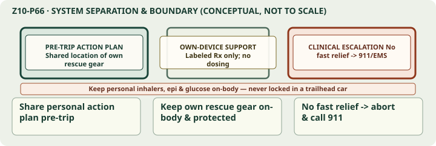

Z10-P66 · Wilderness medicine · New manuscript
Support companions with known asthma, diabetes, or heart conditions outdoors
Plan ahead for known chronic medical needs so companions can assist with a person's own prescribed emergency tools safely.
When it applies · Trips and households including individuals with asthma, severe allergies, diabetes, seizure disorders, or cardiac history.
Equipment · Written personal emergency action plan, patient's own labeled prescribed rescue devices, and accessible backup supplies.

Actions
- Before departure, ask willing companions privately to share critical emergency needs (asthma inhaler location, epinephrine location, diabetes fast-acting glucose, seizure plan, or cardiac medications) and keep a written summary accessible.[T10, T11, M20]
- During a flare-up, stop exertion immediately, provide calm shelter, and assist ONLY with the person's OWN prescribed labeled rescue device or documented personal action plan—never adjust prescription dosages or share another person's medication.[M08, M20]
- Activate 911/EMS early whenever a chronic condition fails to respond promptly to the person's own rescue plan, requires repeated rescue doses, or causes breathing distress, chest pain, or altered alertness.[T02, M08, M20]
Failure recognition · Discovering mid-trip that a companion's rescue inhaler or epinephrine is buried at the bottom of a locked car at the trailhead.[T10, M20]
Verify · Confirm personal rescue devices are carried on the person (protected from freezing/heat) and trip leaders know where they are stored.[T10, M20]
Stop or change course · Unrelieved breathing distress, chest pain, persistent confusion, or exhausted rescue supplies require immediate trip abort and 911 activation.[T02, M08]
Evidence and editorial notes
- M08 · NIH / MedlinePlus · Anaphylaxis (current web edition)
- Section: Recognizing Anaphylaxis and Prescribed Epinephrine Use · Conditions: Sudden severe allergic reaction (hives, facial/airway swelling, wheezing, dizziness, vomiting)
Support: Call 911 immediately for suspected anaphylaxis and assist the patient in using their own prescribed epinephrine auto-injector per its label; symptoms can rebound requiring hospital observation.
Limitations: Lay responders never prescribe or supply unprescribed epinephrine or substitute antihistamines for emergency activation. · Conflicting evidence: None; aligns with AAAAI/MedlinePlus guidance.
Editorial note: Separates assisting with a patient's prescribed auto-injector from lay prescribing. · Specialist reviewer: Allergy/immunology and EMS
Primary source · checked 2026-11-24 - M20 · NIH / MedlinePlus · First Aid Overview (current web edition)
- Section: Lay First-Aid Scope, Kit Readiness, and Documentation · Conditions: Pre-trip kit preparation and remote patient monitoring
Support: Maintain an inspected, unexpired first-aid kit matched to your actual training, keep written patient observations (time, responsiveness, breathing, symptoms, interventions) for EMS handoff, and practice skills in certified courses.
Limitations: Carrying advanced medical instruments without clinical training adds risk rather than capability. · Conflicting evidence: None; aligns with ARC and NPS-K.
Editorial note: Anchors kit sizing, SOAP-style lay observation logs, and scope-of-practice cards. · Specialist reviewer: Wilderness EMS and clinical education
Primary source · checked 2026-11-24 - T02 · American Red Cross · First Aid Steps (current web edition)
- Section: First Aid Steps > Call 9-1-1 · Conditions: Lay emergency response to unresponsiveness, abnormal breathing or severe bleeding
Support: Activate EMS and get needed equipment. Follow dispatcher directions and act within training.
Limitations: Remote locations may delay EMS arrival, requiring sustained stabilization after activation. · Conflicting evidence: None; aligns with NPS-E.
Editorial note: Mandates early emergency activation and dispatcher adherence. · Specialist reviewer: EMS and wilderness medicine
Primary source · checked 2026-11-24 - T10 · FEMA / Ready.gov · People with Disabilities (current web edition)
- Section: People with Disabilities > Make a Plan and Build a Kit · Conditions: Individuals with mobility, sensory, medical, or power-dependent access and functional needs
Support: Build a personal support network, plan accessible evacuation transport, register voluntarily with local emergency registries where available, and plan backup power and spare supplies for medical devices, medications, and service animals.
Limitations: Local registry availability and utility priority-restoration policies vary by jurisdiction. · Conflicting evidence: None; extends generic preparedness plans to accessible requirements.
Editorial note: Directly addresses Z01 accessible emergency planning requirement. · Specialist reviewer: Accessible emergency management and disability preparedness
Primary source · checked 2026-11-24 - T11 · FEMA / Ready.gov · Make a Plan (current web edition)
- Section: Make a Plan > Family Emergency Communication Plan · Conditions: Households and traveling groups preparing for disruptions
Support: Record out-of-area contacts, local meeting places, medical/allergy summaries, and alternate communication channels (text vs voice) in paper and offline formats; practice the plan periodically.
Limitations: Cellular networks often congest during disasters while SMS or out-of-area contacts may still connect. · Conflicting evidence: None; complements outdoor trip-plan cards.
Editorial note: Anchors emergency communication protocols and group contingency plans. · Specialist reviewer: Emergency management and communications
Primary source · checked 2026-11-24
Source lineage · NIH MedlinePlus First Aid and FEMA Access Needs; new manuscript · Classification · New manuscript.